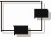
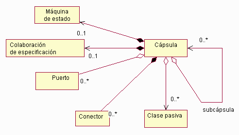
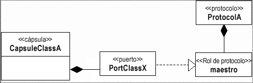
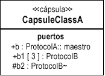
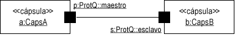
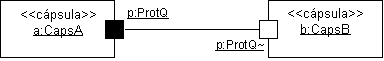

| Artefacto: Cápsula |
|  |
|
| Artefacto del contenedor | ||
|---|---|---|
| Roles | Responsable: | Modificado por: |
| Tareas | Entrada a:
| Salida de: |
| Uso del proceso | ||
| Descripción principal | Las cápsulas representan un patrón específico de una estructura de clase y una composición que ha demostrado ser útil en los sistemas de modelado y diseño que tienen un grado elevado de concurrencia. La utilización de una cápsula como notación abreviada de un patrón de diseño específico y demostrado facilita el diseño y reduce el margen de error. Una cápsula se representa como una clase, <<cápsula>> estereotipada. Una cápsula es un elemento compuesto, tal como se muestra en la figura siguiente.  Composición de la cápsula Tal como se ha indicado anteriormente, una cápsula puede tener puertos y puede "contener" clases pasivas y/o subcápsulas. También puede tener una máquina de estado que describe completamente el funcionamiento de la cápsula. Una taxonomía específica de las cápsulas y de las diferentes formas de utilizarlas se discute en el apartado Directriz: Cápsula. |
|---|
| Opciones de representación | Representación UML: Clase, estereotipada como <<cápsula>>. Tenga en cuenta que esta representación se basa en
la notación UML 1.5. La mayor parte de esto se puede representar en UML 2.0 mediante Concepto: Clase
estructurada. Consulte el apartado Diferencias entre UML 1.x y UML 2.0 para obtener más información.
Una cápsula es un elemento compuesto, tal como se muestra en la figura siguiente.
Composición de la cápsula Una cápsula puede tener puertos y puede "contener" clases pasivas y/o subcápsulas. También puede tener una máquina de estado que describe completamente el funcionamiento de la cápsula. Una taxonomía específica de las cápsulas y de las diferentes formas de utilizarlas se discute en el apartado Directriz: Cápsula. PropiedadesUna cápsula encapsula una hebra de control. Una cápsula es una abstracción de una hebra de control independiente en el sistema; es la unidad primaria de concurrencia en el sistema. El aislamiento adicional de las hebras de control se puede llevar a cabo a través del uso del proceso del sistema operativo y las hebras, correlacionando cápsulas con procesos específicos del sistema operativo y hebras. Los mensajes de las cápsulas llegan a través de un puerto, y se procesan secuencialmente, si la instancia de la cápsula está ocupada, los mensajes se colocan en cola. Las cápsulas refuerzan la semántica de ejecución hasta el final, así que cuando se recibe un suceso, se procesa completamente independientemente del número o de la prioridad del resto de sucesos que lleguen. Una cápsula interactúa con su entorno a través de puertos. Un puerto es un objeto de límite basado en señales; media en la interacción de la cápsula con el mundo exterior. Un puerto implementa una interfaz específica y puede depender de una interfaz específica. Una cápsula no puede tener operaciones o partes públicas a parte de los puertos, que son el medio exclusivo de interacción con el mundo exterior. Cada puerto desempeña un rol concreto en una colaboración. La colaboración describe cómo interactúa la cápsula con otros objetos. Para capturar la semántica compleja de estas interacciones, los puertos se asocian con un protocolo que define el flujo válido de información (señales) entre los puertos conectados de las cápsulas. El protocolo captura las obligaciones contractuales que existen entre cápsulas. Para forzar que las cápsulas comuniquen únicamente a través de puertos, es posible desacoplar totalmente las implementaciones internas de la cápsula del entorno que envuelve a la cápsula. Esto facilita la reutilización de las cápsulas. Una funcionalidad sencilla de una cápsula se realiza directamente en la máquina de estado de la cápsula. Las cápsulas más complejas combinan la máquina de estado con una red interna de subcápsulas colaboradoras unidas por conectores. Estas subcápsulas son cápsulas por si mismas, y se pueden descomponer en subcápsulas. Este tipo de descomposición se puede llevar a cabo sea cual sea la profundidad necesaria, permitiendo el modelado de estructuras arbitrariamente complejas con sólo este conjunto básico de construcciones de modelado estructural. Las máquinas de estado (que son opcionales para las cápsulas compuestas), las subcápsulas, y sus redes de conexiones representan partes de la implementación de la cápsula y están ocultas de observadores externos. Una cápsula puede ser un elemento compuesto. Las cápsulas pueden estar compuestas de otras cápsulas y de clases pasivas. Las cápsulas y las clases pasivas se unen con conectores o enlaces en una colaboración; esta colaboración define la 'estructura' de la cápsula, y por eso se denomina 'colaboración de especificación'. Una cápsula puede tener una máquina de estado que puede enviar y recibir señales a través de los puertos finales de la cápsula y que tiene control sobre ciertos elementos de la estructura interna. Por lo tanto, se puede considerar que la máquina de estado implementa un comportamiento reflexivo, es decir, un comportamiento que controla el funcionamiento de la propia cápsula. PuertosLos puertos son objetos cuyo objetivo es actuar como objetos de límite para una instancia de cápsula. Son "propiedad" de la instancia de cápsula en el sentido de que se crean con su cápsula y se destruyen cuando ésta se destruye. Cada puerto tiene una identidad y un estado que son distintos de la identidad y estado de la instancia de cápsula a la que pertenecen (de la misma manera que una parte es distinta de su contenedor). Aunque los puertos son objetos de límite que actúan como interfaces, no se correlacionan directamente con interfaces UML. Una interfaz UML es puramente un comportamiento - no tiene ninguna estructura de implementación. Un puerto, por otra parte, incluye estructura y comportamiento. Es una parte compuesta de la estructura de la cápsula, no simplemente una restricción sobre su comportamiento. Realiza el patrón de arquitectura que podemos llamar "interfaz manifiesta". En UML, modelamos un puerto como clase con el estereotipo <<puerto>>. Como se ha indicado anteriormente, el tipo de un puerto se define con el rol de protocolo desempeñado por ese puerto. Como los roles de protocolo son clases abstractas, la clase real correspondiente a esta instancia es la que implementa el rol de protocolo asociado con el puerto. En UML, se hace referencia a la relación entre el puerto y el rol de protocolo como Relación de reconocimiento. La notación de esto es una línea de casos con una punta de flecha triangular sólida en el extremo de especificación. Es una forma de generalización donde el elemento de origen -el puerto- hereda sólo la especificación de comportamiento del destino -el rol de protocolo- pero no su estructura. Una cápsula se encuentra en una relación de composición con sus puertos. Si la multiplicidad del destino final de esta relación es superior a uno, esto significa que existen múltiples instancias del puerto en el tiempo de ejecución, y que cada una participa en una instancia separada del protocolo. Si la multiplicidad es un rango de valores, esto significa que el número de puertos puede variar en el tiempo de ejecución y que los puertos se pueden crear y destruir de forma dinámica (posiblemente sujeto a restricciones).  Puertos, protocolos y roles de protocolo La figura anterior muestra un ejemplo de un único puerto denominado b que pertenece a la clase de cápsula CapsuleClassA. Este puerto realiza el rol maestro del protocolo definido por la clase de protocolo ProtocolA. Tenga en cuenta que la clase de puerto real, PortClassX, que es una clase de implementación que puede variar de implementación en implementación, normalmente no resulta interesante para el modelador hasta la fase de implementación. En cambio, la información que es de interés es el rol de protocolo que implementa este puerto. Por este motivo, y por motivos de conveniencia notacional, la notación que se muestra en la Figura 1 no se utiliza normalmente y se sustituye por la forma más compacta que se describe en la sección siguiente. NotaciónEn los diagramas de clase, los puertos de una cápsula se enumeran en un compartimiento de lista especial etiquetado tal como se muestra. El compartimiento de lista puertos normalmente aparece después de los compartimientos de atributo y de lista de operador. Esta notación aprovecha la característica UML que permite añadir compartimientos denominados específicos.  Notación de puerto - representación de diagrama de clase Todos los puertos externos (puertos de relé y puertos finales públicos) tienen visibilidad pública mientras que los puertos internos tienen una visibilidad protegida (por ej., puerto b2). El rol de protocolo (tipo) de un puerto se identifica normalmente con un nombre de vía de acceso ya que los nombres de rol de protocolo son exclusivos sólo dentro del ámbito de un protocolo determinado. Por ejemplo, el puerto b desempeña el rol maestro definido en la clase de protocolo denominada ProtocolA. Para el caso habitual de los protocolos binarios, se utiliza un convenio de notación más sencillo: se utiliza un símbolo tilde de sufijo ("~") para identificar el rol de protocolo conjugado (por ej., puerto b2) mientras que el nombre de rol de base está implícito sin anotaciones especiales (por ej., puerto b1). Los puertos con una multiplicidad diferente de 1 incluyen el factor de multiplicidad entre corchetes. Por ejemplo, el puerto b1[3] tiene un factor de multiplicidad de exactamente 3 mientras que un puerto designado por b5[0..2] tiene un número variable de instancias que no supera 2. ConectoresUn conector representa un canal de comunicación que proporciona las posibilidades de transmisión para proporcionar soporte a un protocolo basado en señales concreto. Una característica clave de los conectores es que sólo interconectan puertos que desempeñan roles complementarios en el protocolo asociado con el conector. En principio, los roles de protocolo no tienen que pertenecer necesariamente al mismo protocolo, pero en este caso tienen que ser compatibles con el protocolo del conector. Los conectores son vistas abstractas de canales de comunicación basados en señales que interconectan dos o más puertos. Los puertos vinculados con una conexión deben desempeñar roles complementarios pero compatibles en un protocolo. En los diagramas de colaboración, se representan con roles de asociación que interconectan los puertos apropiados. Si se abstraen los puertos de esta imagen, los conectores realmente capturan las relaciones de comunicación clave entre cápsulas. Estas relaciones tienen importancia arquitectónica ya que identifican qué cápsulas pueden afectarse entre sí a través de la comunicación directa. Los puertos se incluyen para permitir la encapsulación de cápsulas bajo los principios de ocultar la información y separar los temas. La similaridad entre conectores y protocolos puede sugerir que los dos conceptos son equivalentes. Sin embargo, no es el caso, ya que los protocolos son especificaciones abstractas de un comportamiento deseado mientras que los conectores son objetos físicos cuya función es meramente transferir señales de un puerto a otro. Normalmente, los propios conectores son conductos pasivos. (A la práctica, los conectores físicos pueden desviarse, a veces, del comportamiento especificado. Por ejemplo, como resultado de un error interno, un conector puede perder, reordenar o duplicar mensajes. Este tipo de anomalía es común en canales de comunicación distribuidos). Un conector se modela con una asociación que existe entre dos o más puertos de las clases de cápsula correspondientes. (Para aplicaciones avanzadas en que el conector tenga propiedades físicas, se puede utilizar una clase de asociación ya que el conector es, en realidad, un objeto con un estado y una identidad. Como con los puertos, la clase real que se utiliza para realizar un conector es un elemento de implementación). La relación con el protocolo soportado está implícita a través de los puertos conectados. Como consecuencia, no son necesarias ampliaciones de UML para representar conectores. La colaboración de especificaciónLa estructura interna completa de una cápsula se representa con una colaboración de especificación. Esta colaboración incluye una especificación de todos los puertos, subcápsulas y conectores. Al igual que los puertos, las subcápsulas y los conectores son propiedad de la cápsula y no pueden existir independientes de la cápsula. Se crean cuando se crea la cápsula y se destruyen cuando ésta se destruye. Algunas subcápsulas de la estructura pueden no crearse al mismo tiempo que la cápsula que los contiene. En cambio, se pueden crear posteriormente, cuando sea necesario, en la máquina de estado de la cápsula. La máquina de estado también puede destruir estas cápsulas en cualquier momento. Esto sigue las reglas UML sobre composición. La estructura de una cápsula puede contener los roles denominados conector. Estos son, en realidad, marcadores de posición para las subcápsulas que se rellenan dinámicamente. Esto es necesario porque no siempre se sabe con antelación qué objetos específicos desempeñarán estos roles en el tiempo de ejecución. Cuando esta información esté disponible, la instancia de cápsula apropiada (que es propiedad de alguna otra cápsula compuesta) se puede "conectar" con la ranura y los conectores que tienen los puertos conectados a otras subcápsulas en la colaboración se establecen automáticamente. Cuando ya no sea necesaria la relación dinámica, la cápsula se "elimina" de la ranura del conector, y sus conectores se desmontan. Las subcápsulas creadas de forma dinámica y los conectores permiten el modelado de estructuras que cambian de forma dinámica y, al mismo tiempo, garantizan que toda la comunicación válida y las relaciones de contención entre cápsulas se especifican explícitamente. Esta es la clave para garantizar la integridad de la arquitectura en un sistema de tiempo real complejo. Los puertos también pueden estar representados en diagramas de colaboración de especificación. En estos diagramas, los objetos se representan con los roles clasificadores apropiados, es decir, subcápsulas por roles de cápsula y puertos por roles de puerto. Para reducir el desorden visual, los roles de puerto generalmente se muestran en forma de iconos, representados por pequeños cuadrados negros o blancos. Los puertos públicos se representan con iconos de rol de puerto que se expanden por encima del límite de los roles de cápsula correspondientes tal como se muestra en la figura anterior. Esta breve notación les permite estar conectados desde dentro y desde fuera de la cápsula sin cruzar innecesariamente líneas y también los identifica claramente como objetos de límite.  Notación de puerto - diagrama de colaboración de especificación Tenga en cuenta que las etiquetas son adornos para los roles de puerto y no se deben confundir con los nombres finales de asociación del conector. Asimismo, como los puertos se identifican únicamente por sus nombres, es posible, por conveniencia gráfica, ajustar los roles de puerto público alrededor del perímetro de un recuadro de subcápsula de cualquier modo. Esto se puede utilizar para minimizar los cruces entre líneas conectoras. Para el caso de protocolos binarios, se puede utilizar un icono estereotipado adicional: el puerto que desempeña el rol conjugado se indica con un cuadrado rellenado en color blanco (a diferencia de los rellenados en color negro). En este caso, el nombre de protocolo y el sufijo tilde son suficientes para identificar el rol de protocolo como rol conjugado; el nombre de rol de protocolo es redundante y se debe omitir. Del mismo modo, el uso del nombre de protocolo aislado en un cuadrado negro indica el rol de base del protocolo. Por ejemplo, si el rol "maestro" en el protocolo ProtQ se declara como la base, los diagramas de la figura siguiente y de la figura anterior son equivalentes. Este convenio facilita ver cuando se conectan los roles de protocolo complementarios.  Convenios de notación para protocolos binarios Los puertos con un factor de multiplicidad superior a uno, también pueden indicarse gráficamente con la notación de múltiples objetos UML estándar, tal como se muestra en la figura siguiente. Esto no es obligatorio (la cadena de multiplicidad es suficiente) pero enfatiza la posibilidad de múltiples instancias del puerto.
Puertos con factor de multiplicidad superior a 1 La máquina de estadoLa máquina de estado opcional asociada con una cápsula es sólo otra parte de la implementación de una cápsula. Sin embargo, tiene ciertas propiedades especiales que lo distinguen de otros constituyentes de una cápsula:
Las subcápsulas creadas dinámicamente se indican simplemente con un factor de multiplicidad variable. Como las ranuras de conector, también se pueden especificar con un tipo de interfaz puro. Esto significa que, en el momento de la instanciación, cualquier clase de implementación que de soporte a esa interfaz se puede instanciar. Esto facilita la generalidad en las especificaciones estructurales.
A pesar de estas restricciones adicionales, la máquina de estado asociada con una cápsula se modela con el enlace
estándar entre un clasificador UML y una máquina de estado. La implementación/descomposición de una cápsula se modela
con un elemento de colaboración UML estándar que se puede asociar con un clasificador. |
|---|

© Copyright IBM Corp. 1987, 2006. Reservados todos los derechos. |